дивись – думай – дій
У попередніх чотирьох розділах ви почали розвивати навички розумного водіння, вивчаючи основи водіння:
- бути водієм, який думає
- підтримувати транспортний засіб у безпечному стані
- розуміти знаки, сигнали та дорожню розмітку
- знати правила дорожнього руху.
Цей розділ поєднує всі ці поняття й описує, як застосовувати їх у межах дивись – думай – дій — стратегії водіння, яка допомагає вам бути безпечним і компетентним водієм.
дивись — шукайте небезпеки. Звертайте увагу на інших учасників дорожнього руху та місця, де можуть виникнути небезпеки.
думай — визначте, які небезпеки найнебезпечніші. Швидко обдумайте можливі рішення. Виберіть найбезпечніше рішення.
дій — виконуйте маневри, щоб забезпечити безпеку собі та іншим.
дивись – думай – дій
Щоразу, коли ви за кермом, ваші очі мусять оглядати простір навколо вас, щоб збирати інформацію. Добре спостереження означає знати, як дивитися і куди дивитися. Наступний крок — виявлення небезпек: знати, що шукати.
Спостереження
Добре спостереження включає погляд уперед, убік і назад.
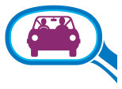
Спостереження вперед
Дослідження показують, що нові водії так багато часу дивляться на дорогу просто перед своїм транспортним засобом, що часто не помічають небезпек далі попереду. Переконайтеся, що ви знаєте, що вас чекає, оглядаючи дорогу щонайменше на 12 секунд уперед. Це означає дивитися на один-два квартали вперед у місті й на пів кілометра вперед на шосе. Так ви матимете час підготуватися до можливої небезпеки замість того, щоб вона захопила вас зненацька.
Дивлячись уперед, оглядайте також ліворуч і праворуч, щоб бачити, що відбувається обабіч дороги. Якщо ви бачите автомобілі, припарковані біля краю дороги, будьте обережні. З-поміж них може вийти дитина або раптово відчинитися двері.
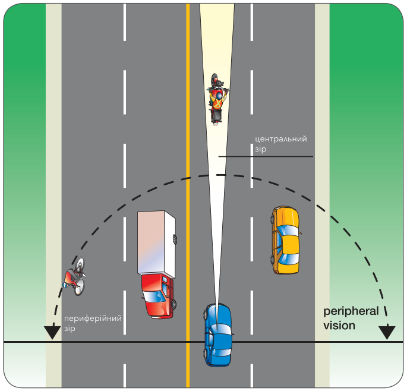
Спостереження назад
Ваші бічні дзеркала та дзеркало заднього огляду показують, що відбувається позаду вас. Налаштуйте їх так, щоб отримати найкращий можливий огляд. Дивіться в кожне дзеркало приблизно кожні п’ять–вісім секунд і звертайте увагу на те, що бачите.
Дзеркало заднього огляду — подивіться в нього, перш ніж сповільнитися чи зупинитися. Чи буде автомобілям позаду вас де зупинитися? Якщо ні, вам, можливо, доведеться діяти.
Бічні дзеркала — користуйтеся бічними дзеркалами щоразу, коли плануєте змінити положення на дорозі або напрямок руху. Коли ви від’їжджаєте від правого краю дороги, вам потрібно перевірити ліве дзеркало, щоб переконатися, що позаду не наближаються автомобілі. Якщо ви змінюєте смугу праворуч, перевірте праве дзеркало, щоб переконатися, що там достатньо місця, куди перемістити транспортний засіб.
Сліпі зони — навіть коли ваші дзеркала налаштовані належно, є великі ділянки, яких ви не бачите в дзеркалах. Вони називаються сліпими зонами. Найнебезпечніші сліпі зони — з боків. Є також сліпі зони нижче вашого поля огляду — спереду, позаду та з обох боків вашого транспортного засобу.
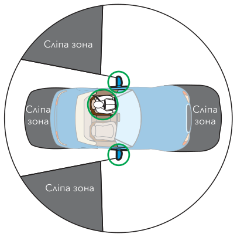
Датчики сліпих зон, камери — деякі транспортні засоби оснащені датчиками сліпих зон і/або камерами заднього огляду. Хоча вони можуть допомогти вам виявити небезпеки в сліпих зонах або позаду транспортного засобу, вони не скасовують потреби повернути голову, щоб зробити перевірку через плече чи подивитися назад.
Перевірка через плече — щоразу, коли ви плануєте змінити напрямок руху або положення на дорозі, зробіть перевірку через плече, щоб переконатися, що сліпа зона з того боку вільна.
Наприклад, коли ви збираєтеся повернути праворуч, швидко погляньте праворуч, щоб переконатися, що в тому просторі нікого немає. І не забувайте перевірити дзеркала та зробити перевірку через плече, перш ніж відчинити двері й вийти з транспортного засобу. Збоку до вас може під’їжджати велосипедист або інший транспортний засіб.
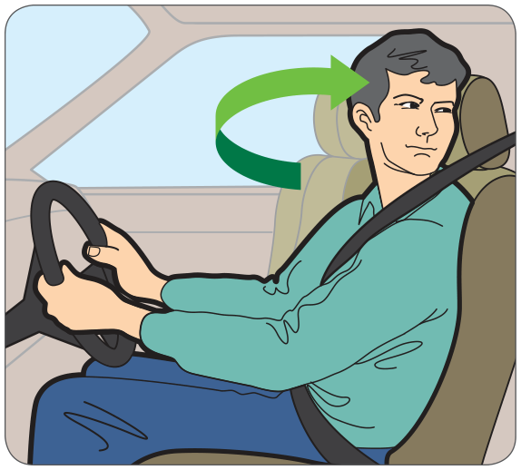
Задній хід — перш ніж давати задній хід, обов’язково зробіть круговий огляд на 360 градусів. Огляньте все навколо транспортного засобу, роблячи перевірки через плече та перевірки дзеркал, а потім поверніть тіло, щоб дивитися в заднє вікно, поки даєте задній хід. Будьте особливо обережні, коли виїжджаєте заднім ходом з під’їзної дороги. Легко не побачити дітей, домашніх тварин, пішоходів, велосипедистів і людей у візках. Якщо ви стояли якийсь час, обійдіть задню частину транспортного засобу, щоб перевірити, чи вільний ваш шлях. Ще краще — намагайтеся заїжджати заднім ходом на під’їзні дороги та машиномісця, щоб виїжджати передом.
Спостереження на перехрестях
Дивіться далеко вперед, коли наближаєтеся до перехрестя. Шукайте знаки, сигнали та інші підказки про те, чи потрібно буде зупинитися.
Коли ви наближаєтеся до перехрестя, огляньте дорогу, яку перетинаєте, — подивіться ліворуч, у центр, праворуч, а потім знову гляньте ліворуч. Якщо транспортний засіб, що рухається назустріч, повертає ліворуч, будьте особливо обережні — водій може вас не бачити. І перевіряйте пішохідні переходи, які збираєтеся перетнути, щоб переконатися, що вони вільні.
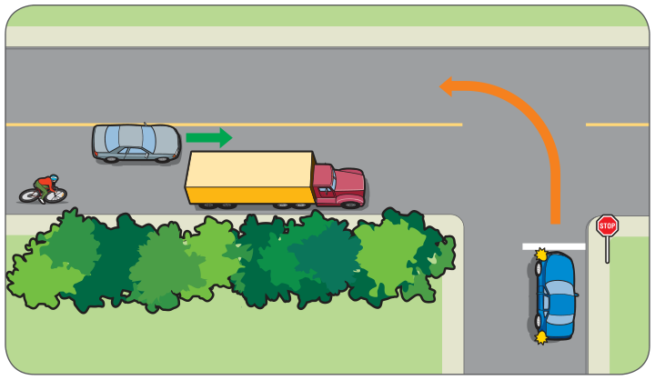
Зупинка та початок руху знову — сповільнюючись до зупинки, перевірте дзеркала, щоб побачити транспорт позаду. Потім переконайтеся, що маєте чіткий огляд перехрестя. Якщо огляд закритий, можливо, доведеться повільно виїхати на перехрестя, щоб добре побачити дорогу перед подальшим рухом.
Поворот — зробіть перевірку через плече, щоб переконатися, що поряд із вами не з’явився велосипедист чи інший учасник дорожнього руху. Потім огляньте перехрестя саме тоді, коли починаєте рухатися вперед. Переконайтеся, що ваші очі дивляться в той бік, куди ви хочете їхати, коли починаєте поворот.
Виявлення небезпек
Безпечне водіння означає, що ви шукаєте небезпеки. Небезпека — це все у дорожньому середовищі, що може зашкодити вам або іншим учасникам дорожнього руху. Виявлення небезпек — це навичка розпізнавати такі небезпеки. Щоб безпечно користуватися дорогою спільно з іншими, привчіть себе шукати інших учасників дорожнього руху та всі об’єкти чи дорожні поверхні, які можуть створити проблеми вам або іншим у дорожньому середовищі. Керуючи, думайте про те, де можуть виникнути небезпеки.
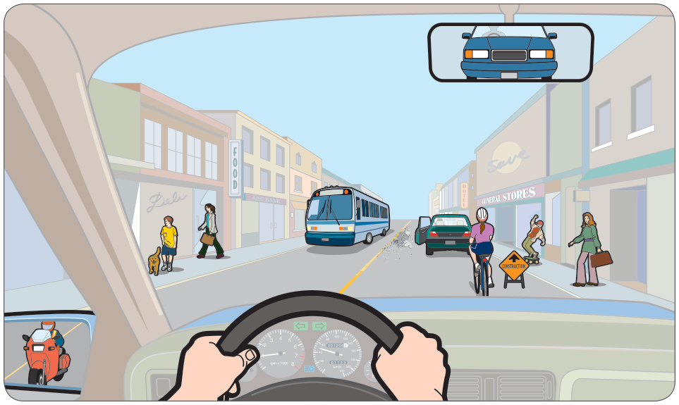
Дорожнє середовище включає все навколо вас: інших учасників дорожнього руху, стан дороги, погодні умови та всю активність на краю дороги, що може на вас впливати.
Конфлікти за простір
Конфлікт за простір виникає, коли двоє учасників дорожнього руху одночасно намагаються зайняти той самий простір. Щоб керувати безпечно, тримайте навколо транспортного засобу вільні зони — так званий запас простору. Якщо вам доведеться раптово зупинитися, водій, який їде надто близько позаду, може створити конфлікт за простір. Ось інші конфлікти за простір:
- транспортний засіб, який виїжджає на вашу траєкторію
- пішохід, який виходить на дорогу перед вашим транспортним засобом
- транспортний засіб, який виїжджає задним ходом з під’їзної дороги.
Несподіванки
Усе непередбачуване є небезпекою. Раптово відчинені двері автомобіля можуть стати несподіванкою для велосипедиста. Якщо велосипедист відвертає, щоб їх обминути, або падає перед вами, для вас це теж буде несподіванкою. Щоб уникати несподіванок, думайте далеко наперед і запитуйте себе, що може статися в дорожньому середовищі. Ось інші несподіванки:
- водій, який петляє з боку в бік
- погано завантажений пікап — щось може впасти
- скейтбордист, який може раптово вискочити на дорогу.
Перешкоди для огляду
Перешкода для огляду є небезпекою. Ось приклади перешкод для огляду:
- автобус, який закриває вам огляд людей, що збираються перейти вулицю
- закрут дороги або підйом, через який не видно, що попереду
- велика вантажівка на сусідній смузі
- туман, дощ або сніг.
Будьте дуже обережні, коли не бачите всієї дорожньої ситуації.
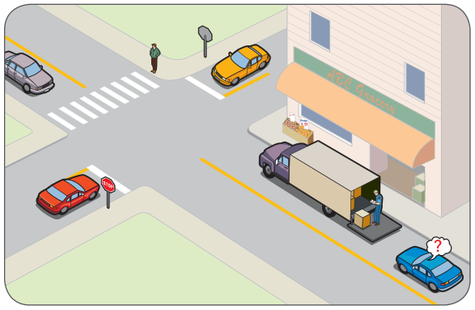
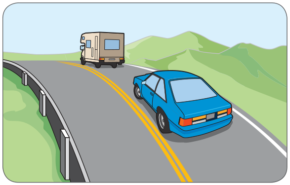
Погані дорожні умови
Погане покриття дороги є небезпекою, бо може впливати на зчеплення з дорогою та керування рулем. Сипкий гравій, лід або дощ можуть призвести до втрати контролю, якщо ви не готові. Ось інші погані дорожні умови:
- дорога з твердим покриттям, яка раптово переходить у гравійну
- мокрі або обледенілі ділянки
- великі калюжі після зливи.
Керуючи, ви завжди бачитимете небезпеки. Щоб приймати правильні рішення за кермом, дотримуйтеся двоетапного процесу:
1. Оцініть ризик.
2. Виберіть найкраще рішення.
Оцініть ризик
У цій ситуації ризик помірний. Ви погано бачите, що попереду, тому потрібно трохи сповільнитися й бути обережним.
Тепер ризик зростає. Це не найкращий момент для обгону, бо відразу за закрутом можуть бути будь-які небезпеки.
Щоб оцінити, наскільки ризикована ця ситуація, запитайте себе, що може статися. А якщо відразу за закрутом той водій натрапить на неочікувану перешкоду? Йому, можливо, доведеться сповільнитися й раптово зупинитися або повернутися у вашу смугу. Це означає, що ви маєте бути готові сповільнитися або зупинитися, якщо буде потрібно.
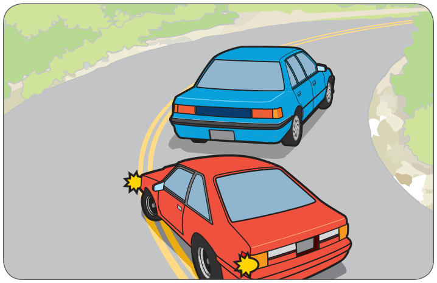
Коли ви опиняєтеся в ситуації з більш ніж однією небезпекою, що ви робите? Вам потрібно визначити, яка з небезпек найсерйозніша.
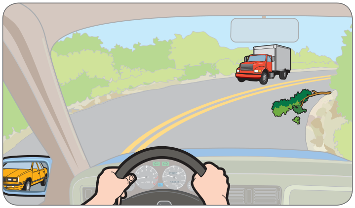
Виберіть рішення
Усі ці рішення пов’язані з керуванням швидкістю, керуванням рулем, запасом простору та комунікацією.
Обдумуючи можливі рішення, спробуйте передбачити можливі наслідки кожного з них. Ось уповільнена версія того, як може виглядати ваш процес мислення:
Керування швидкістю
- Чи можу я швидко сповільнитися, чи дорога занадто слизька? Чи не піду я в занос?
- Чи може мій транспортний засіб так швидко зупинитися? Чи достатньо добрі мої гальма та протектор шин?
Керування рулем
- Якщо я з’їду на праве узбіччя, чи збережу контроль над автомобілем?
Запас простору
- Чи є в мене простір, щоб безпечно зупинитися? Чи є простір спереду? Простір позаду? Чи є позаду автомобіль, який може в мене вдарити, якщо я різко зупинюся?
- Чи достатньо в мене простору, щоб виїхати на узбіччя?
Комунікація
- Якщо я посигналю, чи допоможе це попередити водія?
Зазвичай рішення, яке ви обираєте, залежить від того, де є простір. Чи достатньо простору спереду? З боку? Простір дасть вам змогу безпечно вийти із ситуації.
Деякі рішення потрібно приймати за секунди. Це означає, що вам потрібно багато практики в оцінюванні ризику та виборі найкращого рішення. Відпрацьовуйте це, обдумуючи наперед, що ви зробили б у надзвичайних ситуаціях.
Коли ви оцінили ризик і вибрали рішення, вам потрібно застосувати свої навички водіння, щоб виконати маневр. Крок «дій» у «дивись – думай – дій» включає:
- керування швидкістю
- керування рулем
- запас простору
- комунікація.
Усі ваші маневри за кермом поєднуватимуть ці чотири навички — чи то ви їдете прямо, повертаєте на перехресті, чи відвертаєте, щоб уникнути небезпеки.
Керування швидкістю
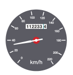
Ви користуєтеся засобами керування швидкістю — акселератором і гальмом. Якщо ви керуєте транспортним засобом із механічною коробкою передач, ви також використовуєте передачі, щоб контролювати швидкість. Добре керування швидкістю означає підтримання відповідної та рівномірної швидкості з урахуванням дорожніх умов.
Відповідна швидкість
Перевищення швидкості небезпечне, але найбезпечніша швидкість не завжди найнижча. Якщо ви їдете значно повільніше за потік навколо, інші водії можуть роздратуватися й спробувати вас обігнати.
Тримайтеся швидкості, яка відповідає умовам, у яких ви їдете. Вказана швидкість — це максимум лише для ідеальних умов. Виберіть меншу швидкість, якщо умови не ідеальні — наприклад, якщо дороги слизькі або видимість обмежена.
Якщо знак не вказує інше, обмеження швидкості такі:
- 50 км/год у містах і селищах
- 80 км/год за межами міст і селищ
- 20 км/год — максимальне обмеження швидкості у провулку або проїзді в межах муніципалітетів, якщо не вказано інше.
Рівномірна швидкість
Щоб тримати рівномірну швидкість, плавно користуйтеся гальмом і акселератором. Швидко під’їжджати до знака STOP і потім різко натискати гальмо шкідливо для ваших пасажирів і для транспортного засобу. Через це водій позаду також може вдарити у задню частину вашого автомобіля.
Щоб швидкість була плавною та рівномірною, потрібно передбачати. Коли ви бачите знак STOP, починайте сповільнюватися. Шукайте небезпеки попереду і гальмуйте, щоб поступово сповільнити транспортний засіб.
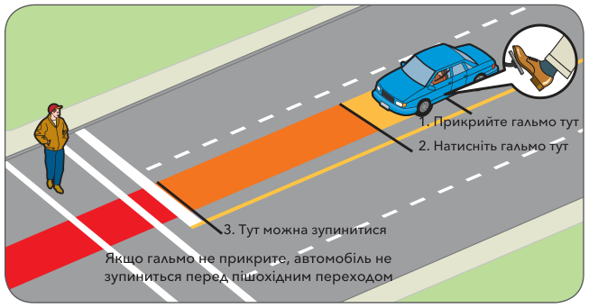
Фізика і водіння
За кермом потрібно враховувати закони фізики:
Зчеплення з дорогою — це те, наскільки шини тримаються за дорогу.
Слизьке чи піщане покриття, зношені шини та недокачані або перекачані шини, які не тримаються за дорогу, зменшують зчеплення з дорогою. Сповільніться на поганому покритті дороги.
Інерція — це властивість рухомих тіл — у цьому разі вас і вашого транспортного засобу — продовжувати рух уперед по прямій. Коли ви гальмуєте, інерція намагається зберегти рух вашого транспортного засобу. Коли ви проходите закрут, інерція намагається зберегти ваш рух по прямій. Чим швидше ви їдете, тим більша сила інерції.
Сила тяжіння — це сила, яка притягує все до землі. Через неї ваш транспортний засіб сповільнюється на підйомі і набирає швидкість на спуску. Це важливо пам’ятати на спуску, бо вашому транспортному засобу буде потрібна більша відстань для зупинки.
Центр ваги — це точка, навколо якої врівноважена вся вага тіла. Центр ваги будь-якого тіла може змінюватися. Наприклад, канатоходець може тримати шест, щоб опустити центр ваги тіла й полегшити втримання рівноваги.
Більшість транспортних засобів побудовані за одним принципом — досить низько до землі, щоб добре тримати рівновагу на підйомах, закрутах і нерівному покритті. Але деякі транспортні засоби — наприклад, окремі спортивно-утилітарні автомобілі, пікапи та автодоми — мають вищий центр ваги. Щоразу, коли висота транспортного засобу або його вантажу збільшується, центр ваги теж піднімається. Транспортний засіб із вищим центром ваги менш стійкий на нерівному покритті і з більшою ймовірністю перевернеться на закруті, пройденому на вищій швидкості. Це потрібно пам’ятати, якщо ви керуєте транспортним засобом такого типу.
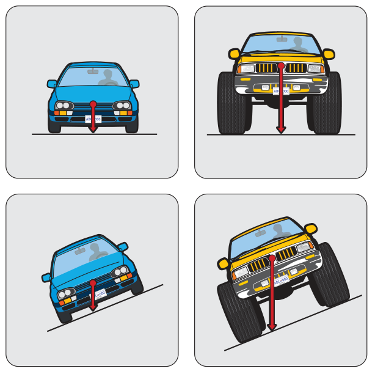
Проходження закрутів
Коли ви проходите закрут, інерція намагається зберегти рух вашого транспортного засобу по прямій, а зчеплення з дорогою намагається втримати шини на закругленому покритті. Чим швидше ви їдете, тим більший тиск припадає на зовнішню передню шину. Якщо ви їдете надто швидко, інерція виведе ваш транспортний засіб із дороги. Якщо ви загальмуєте, ваш транспортний засіб може піти в занос. Проблема посилюється, якщо дорога слизька або нерівна. Найкраща практика — сповільнитися перед закрутом і не гальмувати в ньому.
Якщо на закруті ви все ж починаєте втрачати зчеплення, не гальмуйте. Відпустіть акселератор і плавно натисніть знову, коли зчеплення відновиться.
Використання передач
Якщо ви керуєте транспортним засобом із механічною коробкою передач, ви повинні вміти вибирати відповідну передачу й плавно перемикатися. Потрібна практика, щоб узгоджувати роботу зчеплення, акселератора й важеля перемикання передач.
Рух за інерцією на спуску в нейтральному положенні або з натиснутим зчепленням заборонений законом. Щоб безпечно керувати транспортним засобом, будьте на передачі.
Керування рулем
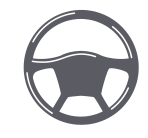
Керування рулем, як і будь-яка навичка, вимагає практики. Практика допоможе вам узгоджувати рухи рук і погляд, щоб ви могли рухатися по прямій або плавною дугою. Два головні принципи доброго керування рулем — контроль над рульовим колесом і збереження правильного положення на дорозі.
Контроль над рульовим колесом
Тримайте обидві руки із зовнішнього боку рульового колеса. Якщо ви керуєте, тримаючи руки з внутрішнього боку колеса, під час аварії ви можете травмувати руки. Іноді вам доведеться керувати однією рукою, коли ви перемикаєте передачі або користуєтеся органом керування на передній панелі, але за можливості тримайте обидві руки на колесі. Так ви маєте кращий контроль, а також скорочуєте час реакції, коли бачите небезпеку.
Де тримати руки? Уявіть, що ваше рульове колесо — це годинник. Тримайте руки на однаковій висоті в положенні «9 годин і 3 години» або «10 годин і 2 години», як вам зручніше. Якщо в рульовому колесі є подушка безпеки, положення «9 і 3» або навіть «8 і 4» може бути кращим за «10 і 2». Це тому, що ваші руки можуть ударити вас по обличчю, якщо подушка безпеки розкриється, коли вони в положенні «10 і 2».
Збереження правильного положення на дорозі
Ведіть транспортний засіб плавною лінією, щоб під час руху було мало коливань з боку в бік. Найкращий спосіб — дивитися далеко вперед у тому напрямку, куди ви хочете їхати. Периферійний зір допоможе вам тримати транспортний засіб у центрі смуги й рухатися по прямій. Під час повороту дивіться далеко вперед у напрямку повороту. Це допоможе вам повернути плавною дугою.
Запас простору
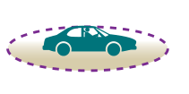
Їхати надто близько позаду (рухатися надто близько за транспортним засобом попереду) — одна з головних причин аварій. Якщо ви їдете надто близько позаду, транспортний засіб попереду може закрити вам огляд небезпек. Гірше того, якщо він раптово зупиниться, у вас не буде часу сповільнитися й безпечно зупинитися. Якщо ви вдарите його в задню частину, відповідальність за аварію покладуть на вас.
Зупинка
Зупинка транспортного засобу — це більше, ніж просто натискання на педаль гальма.
Загальна відстань зупинки — це відстань, яку проїде ваш транспортний засіб з моменту, коли ви:
Коли ви бачите проблему попереду під час водіння, вам потрібно приблизно три чверті секунди на дивись-думай і ще три чверті секунди на дій. Лише тоді ваш транспортний засіб почне сповільнюватися.
Саме тому так важливо залишати достатньо простору спереду.
Простір спереду — правило двох секунд
Завжди залишайте безпечну дистанцію між своїм транспортним засобом і транспортним засобом попереду. За доброї погоди та добрих дорожніх умов вам потрібно щонайменше дві секунди простору спереду. Збільшуйте дистанцію до трьох секунд на дорогах із високою швидкістю руху та до чотирьох секунд за поганої погоди або на нерівних чи слизьких дорогах.
Тримайте дистанцію щонайменше три секунди, коли ви їдете за великим транспортним засобом, який може закрити вам огляд, або за мотоциклом, який може дуже швидко зупинитися. Дистанцію щонайменше три секунди варто тримати також тоді, коли транспортний засіб їде надто близько позаду вас, або коли ви їдете за іншим транспортним засобом дорогою без твердого покриття, де в повітрі може бути пил або гравій.
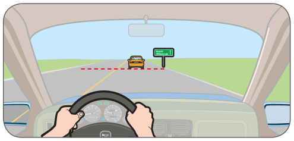
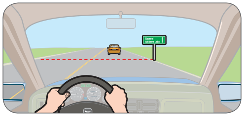
Коли транспортний засіб попереду проїжджає цей об’єкт, починайте рахувати: одна тисяча один, одна тисяча два, одна тисяча три.
На шосе відміряйте трисекундний простір, вибравши попереду нерухомий об’єкт.
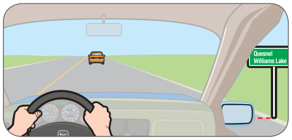
Якщо ви досягаєте об’єкта, коли кажете «три», ви тримаєте трисекундну дистанцію.
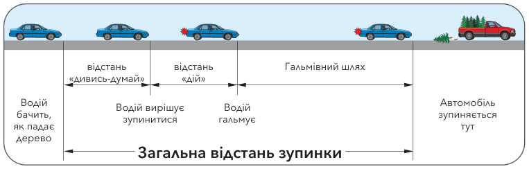
Простір позаду
Що робити, коли хтось їде надто близько позаду вас? Ви не можете керувати простором позаду так само, як простором спереду. Але варто трохи сповільнитися, щоб збільшити простір спереду. Тоді, якщо вам доведеться зупинятися, ви зупинитеся плавніше й буде менше шансів, що водій позаду в’їде у вас. Інші варіанти — перейти в іншу смугу або притиснутися до краю дороги й дати цьому водієві проїхати.
Простір збоку
Обганяючи велосипедиста, пішохода чи іншого уразливого учасника дорожнього руху, сповільтеся, обганяйте, коли це безпечно, і залишайте багато простору. Це не лише безпечніше — так вимагає закон.
Обганяючи велосипедиста, пішохода чи іншого учасника дорожнього руху, зокрема тих, хто користується персональним засобом мобільності, ви повинні залишати щонайменше 1,0 метра простору. На дорогах з обмеженням швидкості понад 50 км/год ви повинні залишати щонайменше 1,5 метра. Якщо людина перебуває на тротуарі або на захищеній велосипедній смузі, ви повинні залишати щонайменше 0,5 метра.
Положення у смузі
Коли ви вирішуєте, де розташувати транспортний засіб у смузі, слід узяти до уваги кілька речей:
- на дорозі з двома смугами тримайтеся досить близько до центральної лінії, щоб інші транспортні засоби не заїжджали у ваш простір у смузі
- у крайній правій смузі тримайтеся якнайдалі від небезпек збоку, як-от дверцят автомобілів, що можуть відчинитися
- у більшості смуг їдьте ближче до центру смуги
- уникайте руху в сліпих зонах інших водіїв.
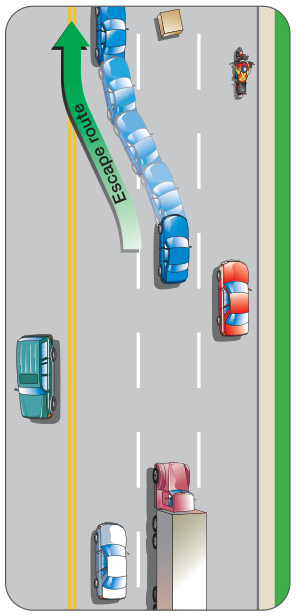
На багатосмуговій дорозі права смуга часто є найбезпечнішим вибором. Вона тримає вас далі від транспорту, що рухається назустріч, і менше шансів, що інший водій їхатиме надто близько позаду вас.
Вибір безпечного інтервалу
Простір, потрібний вам, щоб безпечно перетнути перехрестя або влитися в потік транспорту, називається інтервалом. Вирішити, чи достатньо великий інтервал, щоб він був безпечним, не завжди легко. Вам потрібно врахувати кілька речей:
- швидкість транспортного потоку
- час, який знадобиться на виконання маневру
- час, який знадобиться вашому транспортному засобу, щоб розігнатися до швидкості транспортного потоку.
Будьте уважні, щоб не недооцінити швидкість мотоциклів або велосипедів, що наближаються. Вони часто рухаються значно швидше, ніж здається.
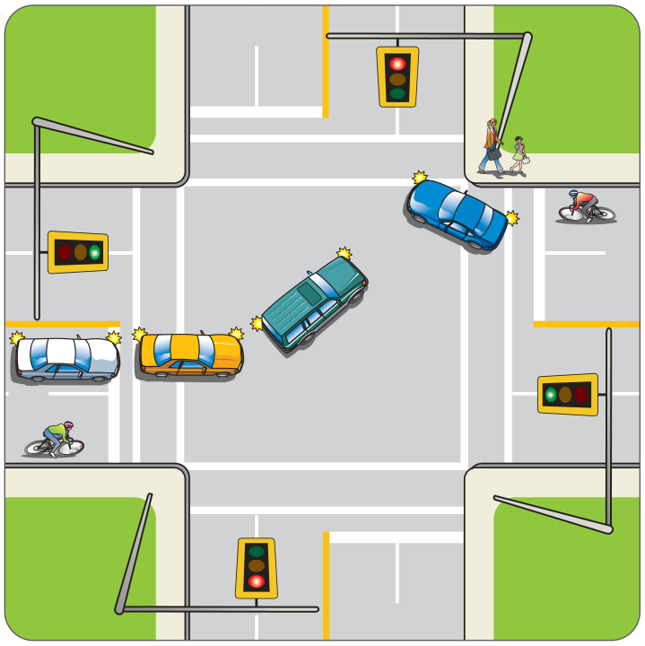
Комунікація
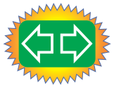
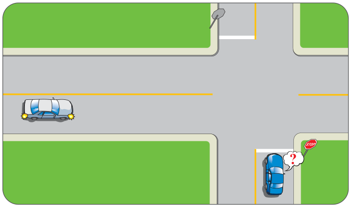
У цій дорожній ситуації інший водій вводить вас в оману суперечливими сигналами. Його указівник повороту показує, що він планує повернути, але положення у смузі та швидкість його транспортного засобу свідчать, що він планує їхати прямо. У такій ситуації краще зачекати й побачити, що він зробить, перш ніж перетинати перехрестя.
Безпечне спільне користування дорогою означає розуміти засоби комунікації та ефективно їх використовувати.
Указівники повороту
Ваші основні засоби комунікації — це указівники повороту. Завжди подавайте сигнал повороту, щоб інші знали, що ви плануєте повернути, змінити смугу, виїхати або притиснутися до краю дороги.
Коли ви подаєте сигнал повороту:
- подавайте вчасно — сигналізуйте завчасно, щоб дати іншим учасникам дорожнього руху достатньо попередження.
- подавайте чітко — не вмикайте указівник повороту надто рано й не вводьте в оману інших. Якщо ви плануєте повернути праворуч на наступному перехресті, а до перехрестя є кілька під’їзних доріг і провулків, зачекайте, доки не наблизитеся достатньо, щоб інші бачили точно, де ви плануєте повернути.
- подавайте правдиво — ваш указівник повороту вимикається автоматично після того, як ви завершили поворот, але іноді цього не відбувається. Переконайтеся, що сигнал вимкнувся після повороту, щоб він не подавав неправильного повідомлення.
Іноді автоматичний указівник повороту важко побачити — наприклад, якщо ви виїжджаєте з ряду припаркованих транспортних засобів. У таких ситуаціях подавайте сигнал рукою додатково до указівника повороту.
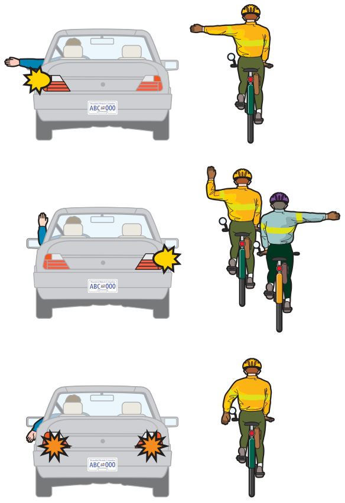
Освітлення
Ваш транспортний засіб має різні типи освітлення, щоб ви бачили й вас бачили. Найчастіше для комунікації ви використовуєте стоп-сигнали, ліхтарі заднього ходу та аварійну сигналізацію.
Стоп-сигнали — їх видно, коли натиснуто гальмо. Коли ви бачите ці сигнали на автомобілі попереду, ви знаєте, що водій сповільнюється й, можливо, планує зупинитися. Дайте іншим знати, що ви маєте намір сповільнитися чи зупинитися, легко торкнувшись гальма. Це увімкне стоп-сигнали.
Ліхтарі заднього ходу — вони показують, що транспортний засіб на задній передачі, а водій дає задній хід або має намір його дати.
Протитуманні фари — протитуманні фари слід використовувати замість фар або разом із ними лише тоді, коли атмосферні умови (туман) роблять використання фар невигідним.
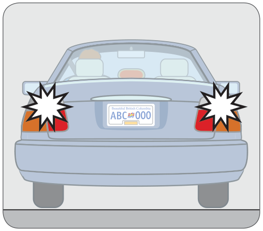
Аварійна сигналізація — вона дає людям знати, що ви зупинилися через надзвичайну ситуацію. Водії вантажівок також використовують її, щоб попередити, що вони рухаються значно нижче обмеження швидкості.
Звуковий сигнал
Звуковий сигнал — корисний засіб комунікації, якщо його використовувати правильно. Наприклад, якщо ви бачите, що хтось починає виїжджати з під’їзної дороги, не дивлячись, легкий короткий сигнал дасть іншому водієві знати, що ви тут. Використовуйте звуковий сигнал лише тоді, коли він дає корисний сигнал іншим водіям і допомагає запобігти аварії.
Зоровий контакт
Часто ви можете спілкуватися з іншими учасниками дорожнього руху лише за допомогою очей. Коли ви зупиняєтеся, щоб пропустити пішоходів, установіть зоровий контакт, щоб вони знали, що ви їх побачили і їм безпечно переходити. Робіть те саме для інших водіїв, мотоциклістів і велосипедистів, коли ви зупинилися на перехресті.
Мова тіла
Махати рукою, щоб пропустити іншого водія або дати пішоходу перейти перед вами, зазвичай не найкраща ідея. Інший водій або пішохід може стикнутися з небезпеками, яких ви не бачите.
Мова транспортного засобу
Про те, що водій збирається зробити, можна багато зрозуміти, спостерігаючи за «мовою транспортного засобу». Якщо транспортний засіб зміщується в межах смуги, водій може планувати змінити смугу або повернути. Якщо транспортний засіб сповільнюється, наближаючись до повороту, водій може
планувати повернути. Коли ви бачите припаркований транспортний засіб із вивернутими назовні колесами, водій може планувати виїхати в потік.
Застосування «дивись – думай – дій»
Дослідження показують, що нові водії часто панікують і навіть застигають у надзвичайній ситуації. Ви можете цього уникнути, якщо даватимете собі достатньо часу та простору для реакції й практикуватимете стратегію дивись – думай – дій. Якщо ви їдете з безпечною швидкістю, дивитеся далеко вперед і залишаєтеся пильними та зосередженими, ви маєте мати час, щоб побачити проблеми, які виникають, обдумати можливі рішення та виконати дії, які допоможуть вам залишитися в безпеці.